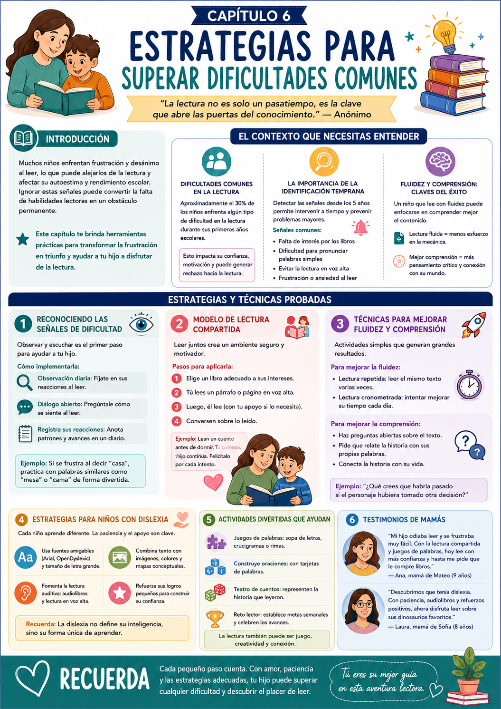

Tu hijo llega a casa y te dice que no quiere leer más porque no entiende lo que dice su libro favorito. Esa situación es más común de lo que pensás — y refleja una lucha interna que muchos chicos enfrentan en su camino lector.
La frustración y el desánimo pueden crear un círculo vicioso: el nene evita leer, practica menos, se atrasa más, se frustra más. Este capítulo te da las herramientas para cortar ese ciclo antes de que se instale.
Identificar a tiempo
Las señales de dificultad aparecen antes de que el nene las verbalice. Saber qué observar es el primer paso.
Fluidez y comprensión
Son dos habilidades distintas que se trabajan diferente. Un chico puede leer fluido y no comprender — o al revés.
Dislexia y diferencias
Algunos chicos procesan la información de manera diferente. Eso no es un límite — es una forma distinta de aprender.
Un dato importante
Aproximadamente el 30% de los chicos enfrenta algún tipo de dificultad lectora en sus primeros años escolares. No es una excepción — es algo que le pasa a muchas familias. La diferencia la hace la intervención temprana.
✅ Antes de arrancar este capítulo

Tuki te dice:
Cada pequeño paso cuenta. Con amor, paciencia y las estrategias adecuadas, tu hijo puede superar cualquier dificultad y descubrir el placer de leer.
Para intervenir bien, primero hay que entender qué está pasando. Las dificultades lectoras tienen señales claras — y cuanto antes las identificás, más fácil es ayudar.
¿Cómo saber si hay una dificultad?
Señales a observar desde los 5 años
Los chicos no siempre verbalizan la frustración — pero sus comportamientos sí la muestran. Estas son las señales más comunes:
- ⚠️Evita la lectura o se pone ansioso cuando tiene que leer en voz alta.
- ⚠️Tiene dificultad para pronunciar palabras simples que ya debería conocer.
- ⚠️Lee pero no puede contar qué pasó en la historia.
- ⚠️Le cuesta mucho mantener el hilo — pierde el lugar constantemente.
- ⚠️Muestra signos de frustración intensa ante textos que parecen apropiados para su nivel.
Lo que podés hacer
Si notas estas señales, no lo presionés. Primero observá, después hablá con él sobre cómo se siente al leer. Un simple "¿qué te parece esta historia?" puede abrir una conversación muy reveladora.
Fluidez vs comprensión
Son distintas — se trabajan distinto
Un error común es confundir las dos. Un chico puede leer en voz alta sin trabarse (fluidez) y no entender nada de lo que leyó (comprensión). O puede entender muy bien pero leer lento y con trabajo (fluidez baja).
Fluidez
Leer con ritmo, expresión y sin trabarse. Se mejora con la lectura repetida — el mismo texto varias veces hasta que fluye.
Comprensión
Entender lo que se leyó. Se mejora con preguntas abiertas después de leer — "¿qué harías vos si fueras el personaje?"
La dislexia y otras diferencias
No es un límite — es una forma distinta
La dislexia implica que el cerebro procesa la información de manera diferente — no es falta de inteligencia ni de esfuerzo. Con las estrategias adecuadas, los chicos con dislexia pueden ser excelentes lectores.
La intervención multisensorial es la más efectiva: involucrar la vista, el oído y el movimiento al mismo tiempo crea conexiones más fuertes entre los sonidos y las letras.
- 1Letras tridimensionales: formá letras con plastilina o cartón. Que las toque y las diga en voz alta al mismo tiempo.
- 2Escritura en el aire: que dibuje la letra en el aire con el dedo mientras pronuncia el sonido.
- 3Colores para cada sonido: asigná un color a cada letra o sonido difícil — ayuda a visualizar y memorizar.
- 4Apps y videos con música: los sonidos de las letras con rimas o canciones hacen el aprendizaje más atractivo.
Ejemplo concreto
Si está aprendiendo la "B": formá la letra con plastilina, después que la dibuje en el aire con el dedo mientras dice el sonido. Kinestésico + auditivo + visual al mismo tiempo.
Tuki te dice:
Identificar la dificultad es la mitad del trabajo. La otra mitad es elegir la estrategia correcta — y eso es exactamente lo que viene ahora.
Tres estrategias concretas para las dificultades más comunes: reconocer las señales, mejorar la fluidez con lectura compartida, y trabajar la comprensión con preguntas.
Observación y diálogo abierto
El primer paso siempre es escuchar
Antes de cualquier estrategia, necesitás saber exactamente qué le está costando. Y la única forma de saberlo es observar y preguntar — sin presionar.
- 1Observación diaria: dedicá unos minutos a ver cómo reacciona frente a los libros. ¿Se muestra ansioso? ¿Evita leer? ¿Se traba siempre en las mismas palabras?
- 2Diálogo abierto: preguntale cómo se siente al leer. "¿Hay palabras que te cuestan más?" — sin juicio, con curiosidad.
- 3Registrá patrones: anotá qué palabras o situaciones le generan más dificultad. Eso te ayuda a detectar si es un problema de fluidez, comprensión o fonética.
Ejemplo concreto
Si se frustra con "casa", no lo corrijas directamente. Probá con palabras similares: "mesa", "cama". ¿Le salen mejor? Eso te dice que el problema es esa palabra específica, no la habilidad general.
Modelo de lectura compartida
Para mejorar la fluidez · Todos los niveles
La lectura compartida es una de las técnicas más efectivas para mejorar la fluidez. El chico escucha cómo se pronuncian las palabras correctamente y cómo se modula la voz — y después lo replica.
- 1Elegí un libro al nivel de su capacidad — ni demasiado fácil ni demasiado difícil.
- 2Vos leés un párrafo en voz alta con buena entonación y ritmo.
- 3Él lee el mismo párrafo intentando imitar tu entonación y ritmo.
- 4Si se equivoca en una palabra, corregí suavemente y pedile que lo intente de nuevo — sin dramatizar.
Ejemplo concreto
Si leen "El Principito", vos leés la descripción del planeta. Él lee las aventuras. Al terminar, conversen sobre lo que más les gustó. La lectura compartida + la conversación es una combinación muy poderosa.
Preguntas abiertas para la comprensión
Pensamiento crítico · Conexión emocional
La comprensión se trabaja con el diálogo. Las preguntas abiertas — sin respuesta correcta o incorrecta — estimulan el pensamiento crítico y ayudan al chico a conectar la lectura con su propia vida.
- 1Después de leer, preguntá: "¿qué crees que habría pasado si el personaje hubiera tomado otra decisión?"
- 2Pedile que relate la historia con sus palabras — sin el libro. Eso muestra qué retuvo y qué no.
- 3Conectá la historia con su vida: "¿alguna vez te pasó algo parecido a lo que le pasó al personaje?"
- 4Usá post-its para marcar palabras difíciles mientras leen — después las repasan juntos.
Tuki te dice:
Con amor, paciencia y las estrategias correctas, tu hijo puede superar cualquier dificultad. Lo importante es no rendirse — cada intento lo hace más fuerte como lector.
Dos ejercicios prácticos para aplicar esta semana más las dos recetas del capítulo. Todo con materiales simples y tiempo estimado.
📖 Lectura en Voz Alta Interactiva
¿Para qué sirve? Mejorar la fluidez y la comprensión al mismo tiempo, en un contexto de conexión emocional.
- 1Elegí un libro que le entusiasme — a su nivel de lectura.
- 2Empezá leyendo en voz alta vos, animándolo a seguir el texto con el dedo.
- 3Hacé pausas interactivas: "¿qué creés que va a pasar ahora?"
- 4Marcá con post-its las palabras difíciles. Al terminar, repásenlas juntos practicando la pronunciación.
Resultado: Mejora de fluidez, comprensión y un momento de conexión que hace que quiera repetirlo.
🎯 Juego de Palabras en Casa (Bingo)
¿Para qué sirve? Practicar el reconocimiento de palabras de forma divertida y sin presión.
- 1Creá tarjetas con palabras que está aprendiendo: objetos de la casa, palabras de sus libros favoritos.
- 2Jugá al bingo: vos decís las palabras, él las busca en sus tarjetas.
- 3Por cada palabra que encuentre, la lee en voz alta antes de marcarla.
- 4Pequeños premios por cada ronda ganada para mantener la motivación.
Resultado: Practica el reconocimiento de palabras sin que se sienta como una tarea — es un juego.
🔍 Caza de Palabras
¿Para qué sirve? Mejorar el vocabulario y la identificación de palabras en formato de juego activo.
- 1Escribí palabras que está aprendiendo en tarjetas.
- 2Esparcí las tarjetas por la habitación.
- 31 minuto para encontrar la mayor cantidad posible.
- 4Cada tarjeta encontrada se lee en voz alta y se usa en una oración.
Resultado: Más vocabulario y más seguridad al reconocer palabras.
📝 Cuento en Tercera Persona
¿Para qué sirve? Mejorar la comprensión lectora a través de la narración creativa.
- 1Leé juntos un capítulo del libro que estén leyendo.
- 2Pedile que cuente la misma historia desde el punto de vista de un personaje secundario.
- 3Que escriba o dibuje su versión.
- 4Comparen las dos versiones y conversen sobre las diferencias.
Resultado: Mejora la comprensión, la creatividad y la capacidad de análisis narrativo.
- 1Ignorar las señales: la frustración sin resolver se convierte en bloqueo emocional. Cuanto antes intervenís, mejor.
- 2Presionar demasiado: forzarlo cuando no está listo genera resistencia. Respetá su ritmo y celebrá cada pequeño logro.
- 3No variar los materiales: un solo tipo de libro o actividad aburre. Alternás cuentos, cómics, libros de actividades, revistas.
- 4Olvidar la diversión: si la lectura se siente como tarea, pierde su encanto. Los juegos y actividades lúdicas mantienen el interés vivo.
- 5Comparar con otros: cada chico tiene su ritmo. Las comparaciones desmotivan — enfocate en sus logros personales.
Tuki te dice:
¡Terminaste el Cap 6! En el Cap 7 vemos herramientas y recursos adicionales para enriquecer aún más la experiencia lectora de tu hijo.
Esta infografía resume las señales, estrategias y herramientas del capítulo. Guardala para tenerla a mano cuando aparezcan dificultades.

Infografía · Capítulo 6 — Estrategias para Superar Dificultades Comunes
Tuki te dice:
¡Excelente! Ya tenés las herramientas para superar los obstáculos más comunes. En el Cap 7 vemos recursos adicionales para enriquecer la experiencia lectora.